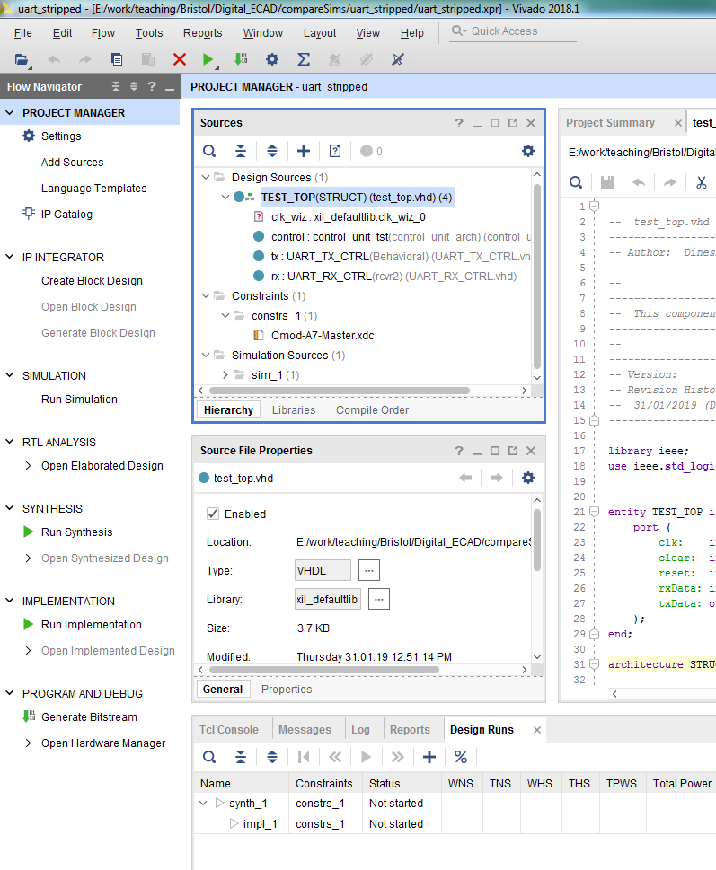
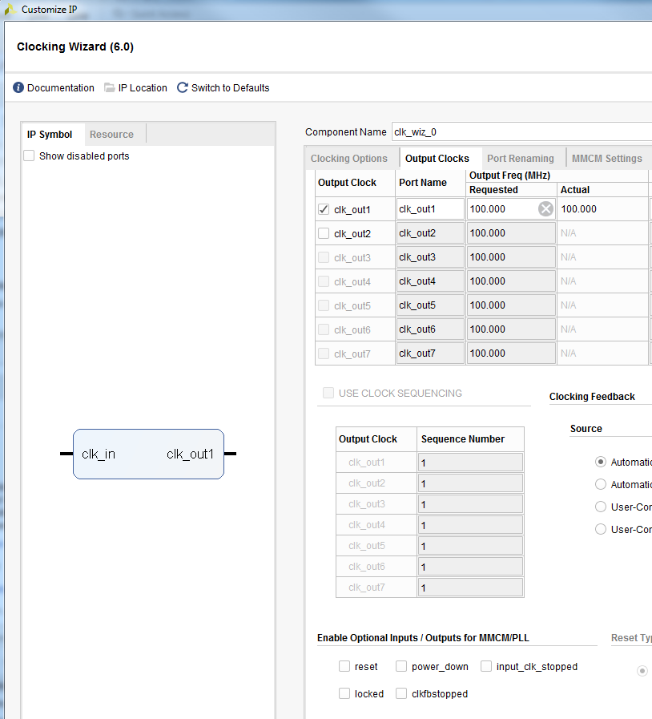

You are provided with a code bundle in a single zipped archive. Download the source file bundle for Assignment from Blackboard, save it in your Documents folder and unzip the archive. Please refrain from storing your project directory in OneDrive, as its synchronization process can alter files to read-only. Remember to back up your development work at the end of each session. For testing the UART you will need the code bundle available in the sub-folder "uart_demo". It comprises VHDL sources files and a Vivado user constraints file:
Download the source file bundle for Assignment from Blackboard, save it in a local folder and unzip the archive.
Start Vivado by clicking on Start -> All Programs -> Xilinx Design Tools -> Vivado 2018.1 -> Vivado 2018.1.
Click on Create Project under Quick Start and a new dialogue will open. In appropriate fields:
Specify a folder where you will store the source and other files generated by the program and a project name.
Create an RTL type project.
In the dialogue window that asks for design sources, add the four source files with extension ".vhd" in the "uart_demo" folder in the downloaded source archive.
In the dialogue window that asks for constraints, add the file "Cmod-A7-Master.xdc".
Choose the component XC7A35TCPG236-1 by filtering for family Artix-7, package cpg236 and speed grade -1.
Once you have created the project, you should see a picture similar to Fig. 5.1.

Vivado IDE.
Double-click the TEST_TOP source to open the top-level entity. You will see that there is a component called clk_wz_0. Only the component interface is declared, and there is no implemented architecture. This is why there is a question mark next to the component in the Sources tab. The reason we have this component is that the UART expects a 100 MHz clock, but the board only has a 12 MHz clock. Xilinx provide various IP (Intellectual Property) blocks that can be used by instantiating them. In this case we need to use a clock conditioning block to generate the 100 MHz clock from the 12 MHz clock supplied by the oscillator on the board.
Click on the Output Clocks tab. Change the Port Name to clk_out from the default populated name of clk_out1 for the first entry. Untick the reset and locked tick boxes at the botton of the window. We don't need this functionality. At this point the window will look similar to Fig. 5.3.

Vivado Clock Wizard Output Clocks.
Click OK, and then Generate. The IP block wil be instantiated according to the specified parameters. Click OK to the final confirmation. Now the question mark would have disappeared and been replaced with a chip symbol in Design Sources.
Under SYNTHESIS in the Flow Navigator, click on Run Synthesis. Say OK to confirm. The synthesis will take some time, and the current status is listed on the top right of the window.
Once synthesis has completed, a new confirmation dialogue window will open giving you several options listed as: Run Implementation, Open Synthesized Design and View Reports. Choose Run Implementation. Click OK to to confirm. While the implementation is running you can click on the Log tab at the bottom and choose the Implementation tab, again at the bottom, to see the running messages.
When implementation has completed a new dialogue window will open giving three choices listed as Open Implemented Design, Generate Bitstream and View Reports. Choose Generate Bitstream and click OK to confirm. If it seems nothing is happening, always check the status at the top right of the Vivado window.
Click the link Open target link under PROGRAM AND DEBUG -> Open Hardware Manager and select Auto Connect. Vivado should recognise the board and populate the Hardware panel with the detected board./ Right-click on the xc7a35t_0 device and select Program Device. Select the "TEST_TOP.bit" file selected as default and choose Program. You can ignore the warnings about a debug core not being detectable.
Open a PuTTY terminal as specified in Section 3.3. Any letter you type into putty will be echoed.
Peak Detector
This code archive is available in the sub-folder "Peak Detector" and contains the following files (shown in alphabetical order.
"cmdProc.edn": The synthesised version of the Command Processor that can be used to synthesise the full system with other sources.
"cmdProc_synthesised.vhd": The Xilinx synthesised version of the Command Processor described as a pure structural implementation. This implementation uses some Xilinx libraries.
"cmdProc_wrapper.vhd": The synthesised version of the Command Processor has a slightly different entity description, with the custom data types BCD_ARRAY_TYPE and CHAR_ARRAY_TYPE being replaced with 2-D arrays of the STD_LOGIC type. This wrapper instantiates the synthesised version as a component and has an entity that matches the entity used in the testbenches.
"Cmod-A7-Master.xdc": The user constraints file that defines the pin configuration on the FPGA and timing constraints.
"common_pack.vhd": This package defines some global constants and data types as well as the data sequence used by the data generator.
"dataConsume_wrapper.vhd": The synthesised version of the Data Processor has a slightly different entity description, with the custom data types BCD_ARRAY_TYPE and CHAR_ARRAY_TYPE being replaced with 2-D arrays of the STD_LOGIC type. This wrapper instantiates the synthesised version as a component and has an entity that matches the entity used in the testbenches.
"dataGen.vhd": The source for the Data Generator. You should scrutinise this code to understand how the single-phase protocol is implemented.
"tb_CmdProcessor_Interim.vhd": Behavioural testbench to be used for the interim submission of the Command Processor.
"top.vhd": The source for the top component that instantiates and binds all of the components for the peak detector.
"signed/tb_dataGenConsume_signed.vhd": The testbench for the full system using the signed data processor that instantiates all the components, and issues two start commands with 12 and 13 bytes respectively, followed by print list and print peak commands by driving the input line of the UART Receiver. This testbench uses the synthesised structural netlists along with the wrappers.
"signed/top_signed.bit": The configuration bit file for the signed implementation that can be directly downloaded to the FPGA for testing the functional specifications.
"unsigned/dataConsume.edn": The synthesised version of the unsigned Data Processor that can be used to synthesise the full system with other sources.
"unsigned/tb_dataGenConsume_unsigned.vhd": The testbench for the full syste using the unsigned data processor that instantiates all the components, and issues two start commands with 12 and 13 bytes respectively, followed by print list and print peak commands by driving the input line of the UART Receiver. This testbench uses the synthesised structural netlists along with the wrappers.
"unsigned/top_unsigned.bit": The configuration bit file for the unsigned implementation that can be directly downloaded to the FPGA for testing the functional specifications.
Synthesising the full system
Create a Vivado project as described in Task 6.2-A and add the following sources:
After adding the files, you need to start the clock wizard and add a clock manager exactly as in steps 6 through 9 in Task 6.2-A. You will now be able to synthesise the full system.
Synthesise the full system as above and programme the FPGA with the generated bit file. Make sure that the functionality is identical to that seen when programmed with the supplied bit file.
To test either your Command Processor, Data Processor or both, remove the relevant edn file or files from the project and add your source. For example, a team working on the Command Processor can replace the synthesised Command Processor edn file with their source file, and use either the "unsigned/dataConsume.edn" or "signed/dataConsume.edn" file along with the rest of the relevant supplied sources to synthesise and test the whole system and vice versa.
Running a full system simulation for the Peak Detector
Create a Vivado project as described in Task 5.1-A steps 1 through 3 and add the following sources:
You don't need to add the constraints file for a simulation. After adding the above sources the testbench with the correct hierarchy should appear under Simulation Sources in the Sources panel. Now just clicking on Run Simulation -> Run Behavioural Simulation should start a simulation.
This testbench tests the complete functionality of the Peak Detector. Try running a full system as above, making sure to run the simulation for at least 65 ms.
Study the relevant signals and make sure you understand how the Rx reads the incoming commands and feeds it to the command processor, which in turn acts on the received commands. All retrieved bytes and outputs are transmitted via the Tx module.
Set the radix of the signals to a type other than binary or hex if it makes more sense. For example, setting the radix to ASCII allows you to read the characters received by the Rx and transmitted by the Tx directly, which is easier than interpreting the hex or binary values.
If only half of the ASCII characters appear visible, you may need to zoom in closer on the waveform.
As you progress through the project you may add multiple testbenches. If you do have multiple testbenches make sure to set the relevant testbench as the top module before running a simulation. You could also disable any files you do not need for a given step, and enable them when you need them again.
Running a stand-alone simulation for the Data Processor
The archive contains two testbenches for the unsigned and signed implementations of the data processor in two separate folders that you can use to test the data processor component as a stand-alone unit. If your group number is odd, you should do an unsigned implementation; if even you should do a signed implementation.
To use this testbench, create a Vivado project as described in Task 6.2-A steps 1 through 3 and add the following sources as simulation sources:
This testbench tests for correct recognition of the ANNN / aNNN command, communication via the UART and correct retrieval of bytes from the data processor.